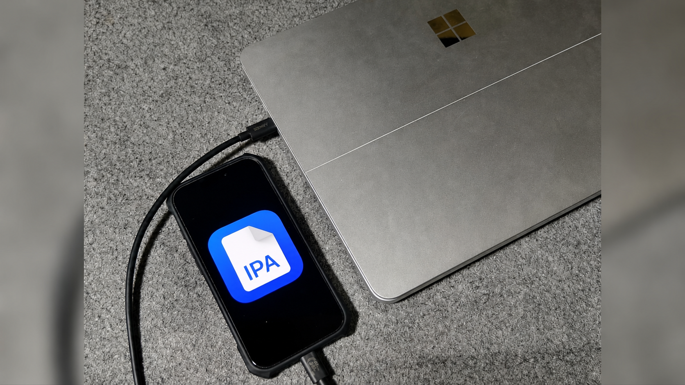

【iPhone・iPad】IPAからアプリをインストールする方法

サイドロードとは?
サイドロードとは、iOSならApp Store、AndroidならGoogle Play Store以外からアプリをインストールすることを指す。 これにより、アプリを特定のバージョンに戻したり、正規のアプリストアで配信されていないようなアプリをインストールできる。 Androidはapkファイルから直接サイドロードできるが、iOSは制限が厳しく、公式にIPAからサイドロードできる手段は開発者向けにしか用意されていない。 しかし、開発者以外でもIPAからアプリをインストールする手段はいくつかある。 ここではその方法を複数紹介する。
方法
 SideStoreより引用
SideStoreより引用
Feather
完全なサイドロードを利用するにはアプリ開発者向けのプログラムであるApple Developer Programに登録し、アプリを署名してサイドロードするのに必要な証明書を得るという方法があるが、これの年会費は99米ドル、2025年10月時点の日本円で約15,000円となっていて、安易にサイドロードのためだけに支払う金額ではないように感じられる。 そこで、Apple Developer Programの証明書を複数人のユーザーで共有して使うことで年間およそ1,000円から3,000円と比較的安い金額で完全なサイドロードができるようにするというサービスがいくつかある。 この方法はすべてiPhoneまたはiPadで実行可能で、サイドロードできるアプリ数の制限や7日に1回の再署名が必要なく、サイドロードしたアプリの通知機能も使える。
サイドロードの動き
先述のようにiOSでは厳しく制限されているサイドロードだが、これにはもちろんメリットがある。 Appleにとっての主なメリットは、アプリストアをApp Storeに限定することでアプリ内の課金や定期購入などによる収益を独占できること。 ユーザーにとっての主なメリットは、App Storeでは審査に通ったアプリしか配信されないため、危険なアプリをインストールするリスクを避けられること。 しかし、EUが2024年にEU域内で販売される端末にサイドロードの解放を義務化し、日本政府も同じような方針を打ち出している。 サイドロードが解放されれば他のアプリストアが使えるようになって課金や定期購入の金額が安くなったり、App Storeで配信されていないアプリをインストールできるようになったりとユーザーにとって利便性が上がるものの、セキュリティでの懸念点が大きくなる。 サイドロードはまさに両刃の剣である。
関連記事
プロフィール

高度情報社会の最先端を駆け抜ける